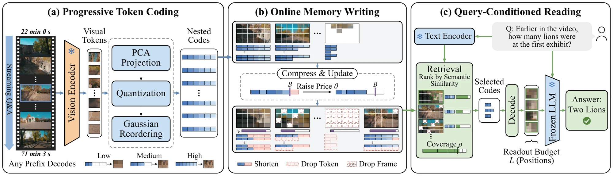
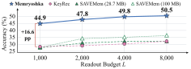
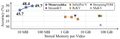
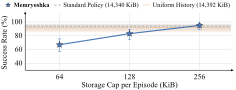
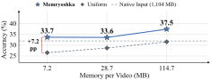

Memryoshka
Adaptive-Fidelity Video Memory for Streaming VLMs
A training-free memory for streaming vision-language models. Memryoshka stores each visual token as a nested code, so when memory fills, old evidence fades to fewer bits instead of being deleted.
7.2 MB instead of 6.6 GB for one hour of full-precision visual tokens.
as a memory that stores every token: six-benchmark average, same readout budget.
six-benchmark average over CausalMem, the strongest bounded memory (+5.9 to +8.0).
48 minutes of film in 7.2 MB
The paper's writer on four open films, one frame per second. Press play: Memryoshka keeps frames from the whole stream at fewer bits, while a full-precision memory of the same size holds only the last 3 frames.
Each column is one moment of video. Height: tokens kept (a whole frame is 252). Color: bits per kept token. Dimmed thumbnails have no frame left.
1282565121k2k4k
An hour of video is 6.6 GB of tokens
Assistants on glasses and robots must store what they see before any question is asked, in a memory that cannot grow. At one frame per second, Qwen2.5-VL-7B turns an hour of video into about 920,000 visual tokens.
Fewer frames
Keep some moments, drop the rest.
Fewer tokens
Keep the parts of a frame that matter.
Fewer bits
Store each kept token with less precision.
Most streaming memories use only the first two and keep full precision. Yet visual tokens compress well along their feature dimension. Memryoshka uses all three, with one rule.
Storage after each step, on a log scale. Shorter codes give most of the saving.
Nested codes and one price per bit
Three parts and no training. The only fitted part is a PCA basis, computed once on unlabeled video.

Nested token codes
Each token is projected onto 512 PCA directions and quantized to 8 bits per direction, 4,096 bits in all. The bits are ordered by how much each reduces the error, so any prefix decodes to an approximate token. Shortening a code drops its tail; nothing is re-encoded.
Pick a length to see which bits a prefix keeps and how much of the variance it keeps.
One price per bit
Each token is dropped or kept at one of eight code lengths, 32 to 4,096 bits. Its value grows with its attention in the vision encoder, how new its frame is, and the detail its prefix keeps. Every bit costs the same price. When memory fills, the price rises: codes get shorter, and the least useful tokens and frames are dropped.
Drag the price. Tokens first get shorter codes, then drop out.
Price per stored bit
Reading when a question arrives
LongCLIP ranks the stored frames by similarity to the question. The best frames' most important tokens are decoded until the readout budget of 1,000 to 4,000 positions is used, and the frozen Qwen2.5-VL-7B reads them in time order.
Matches an uncapped memory, beats bounded ones
Frozen Qwen2.5-VL-7B reader, one frame per second, memories written before the questions are known.
- Long video. Best bounded memory on all four benchmarks at every size: +12.3 to +14.1 points on LVBench and +28.9 to +33.9 on TimeScope over CausalMem.
- Streaming. With the 4 newest frames added, best on StreamingBench and best six-benchmark average: +8.2 to +9.5 points over CausalMem.
Bold: best bounded memory. Gray rows are references and are not ranked.
Settings where Memryoshka scores above a reference that stores far more.
Separate memory and readout budgets
With a 100 MB memory, accuracy rises from 44.9% to 50.5% as the readout grows from 1,000 to 8,000 positions. KeyRec and SAVEMem stay below 33%.

Against streaming KV-cache memories
45.7 to 49.7% with 7.2 to 28.7 MB, against 31.6 to 40.4% for KV caches storing 1.1 to 54.6 GB: +5.3 points with about 450× less storage.

The best fixed length changes with the memory size. Memryoshka picks lengths as it goes and matches or beats the best fixed length in 5 of 6 settings, 0.2 points behind in the sixth.
Robot policy memory (RMBench)
56× less storage than the policy's own history, which reaches 94%. Evenly spaced frames reach 92%.

Audio and video (LVOmniBench)
Above the full input's 32.0% with about 150× less storage. At 114.7 MB the gain grows to 5.5 points.

Ablations: what each part of the writer adds
Accuracy (%) with a readout of 1,000 positions. Bold: best in each column.
What it does not do
- No built-in recency. Retrieval by similarity misses questions about what is on screen now. Adding the 4 newest frames closes most of the gap on streaming benchmarks; SAVEMem stays best on OVO-Bench.
- Retrieval is the bottleneck. On LVBench at 7.2 MB, reading at the annotated evidence times gives 55.8%, against 45.7% with LongCLIP.
- A simple value estimate. The writer guesses future usefulness from attention and novelty; better estimates could balance coverage and detail better.
- Each question costs a prefill of up to the readout budget. KV-cache memories pay per frame instead.